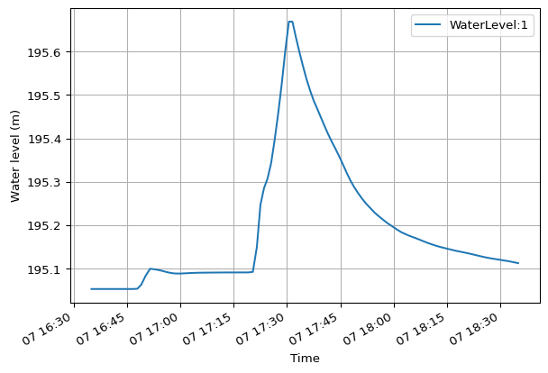
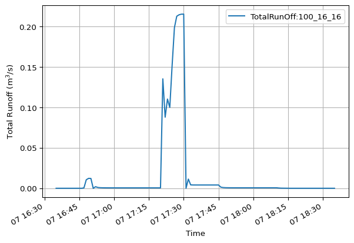
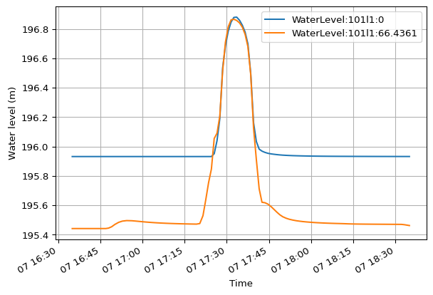
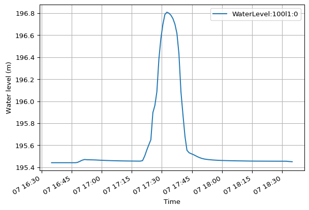
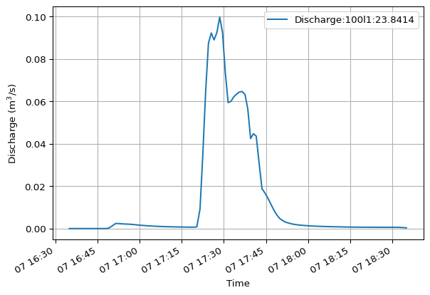

res.nodes
<ResultNodes> (119)
Quantities (1)
- Water level (m)
Derived Quantities (3)
- NodeFlooding
- NodeWaterDepth
- NodeWaterLevelAboveCritical
This section guides you through navigating MIKE IO 1D’s Res1D object. You’ll learn how to access nodes, catchments, reaches, and individual gridpoints, along with their associated data and properties. This exploration is key to understanding the structure and results of your MIKE+ 1D models.
Node data is accessible via the Res1D object, typically named res in our examples. The res.nodes attribute provides access to all nodes in your result file.
res.nodesNotice that displaying res.nodes shows relevant metadata. This is true for all location objects.
The nodes object behaves like a Python dictionary, where node IDs are the keys and specific node objects are the values. You can access a specific node by its ID.
res.nodes["1"]Each node object contains both dynamic quantities (time series results like water level) and static properties (like invert level).
To access a dynamic quantity:
res.nodes["1"].WaterLevel<Quantity: Water level (m)>As shown in the last section, dynamic quantities can be converted to a DataFrame with read(), or plotted with plot():
res.nodes["1"].WaterLevel.plot()
To access a static property:
res.nodes["1"].bottom_level195.0500030517578You can iterate through all nodes, similar to a Python dictionary. For example:
for node_id, node in res.nodes.items():
if node.type == "Outlet":
display(node)You handle catchments similarly to nodes, but they are typically in a separate result file, often from rainfall-runoff simulations.
res_rr.catchmentsRecall that all quantities in a network result file share the same time axis. Hydraulic simulations require finer time steps than hydrologic simulations, and thus a different time index. This is the main reason hydrologic and hydraulic results are stored in separate files.
The catchments object also acts like a dictionary, with catchment IDs as keys.
res_rr.catchments["100_16_16"]Catchment objects also have dynamic quantities and static properties. For instance, TotalRunOff is a dynamic quantity, and area is a static property.
res_rr.catchments["100_16_16"].TotalRunOff.plot()
res_rr.catchments["100_16_16"].area22800.0Just like nodes, you can iterate through catchments like a Python dictionary. For example:
for catchment_id, catchment in res_rr.catchments.items():
if "28" in catchment_id:
display(catchment)Reaches are accessed similarly to nodes and catchments. A key difference is that individual reach objects also contain gridpoints.
res.reachesThe reaches object is dictionary-like, with reach names as keys and specific reach objects as values.
res.reaches["101l1"]Each reach object contains dynamic quantities and static properties.
res.reaches["101l1"].WaterLevel.plot()
Notice that two water levels are plotted above, representing the start and end H-points of the reach.
res.reaches["101l1"].n_gridpoints3Just like before, you can iterate through reaches like a Python dictionary. For example:
# This may print multiple lines
for reach_name, reach in res.reaches.items():
if reach.start_node == "1":
display(reach)Specific reach objects are also both list- and dictionary-like, mapping to their constituent gridpoint objects. Gridpoints are the locations along a reach where results are calculated.
Unlike Python dictionaries, reaches also support sequential indexing (e.g., [0] for the first gridpoint) for convenient gridpoint access.
Access the first gridpoint of reach “101l1”:
res.reaches["101l1"][0]Access the last gridpoint of reach “101l1”:
res.reaches["101l1"][-1]You can also access gridpoints by their chainage value. Chainage can be a float or a string.
res.reaches["100l1"]['23.841']Notice that each gridpoint has its own dynamic quantities and static properties.
Access WaterLevel at the first gridpoint:
res.reaches["100l1"][0].WaterLevel.plot()
Access Discharge at the second gridpoint:
res.reaches["100l1"][1].Discharge.plot()
Gridpoint quantities can vary along a reach. For example, WaterLevel is typically available at H-points (calculation points), while Discharge is available at Q-points (flow points, often at gridpoint centers or structures). Refer to the MIKE+ documentation for details on H-points and Q-points.
Access the chainage static property of a gridpoint:
res.reaches["100l1"][-1].chainage47.6827148432828Just like before, you can iterate through reaches like a Python dictionary. The keys are the gridpoint chainage along the reach. For example:
for chainage, gridpoint in res.reaches["100l1"].items():
print(f"Bottom level at chainage {chainage} is {gridpoint.bottom_level}")Bottom level at chainage 0.000 is 195.44000244140625
Bottom level at chainage 23.841 is 195.0500030517578
Bottom level at chainage 47.683 is 194.66000366210938Dynamic autocompletion in environments like Jupyter or VS Code significantly aids in exploring these objects. Watch this video to see it in action.